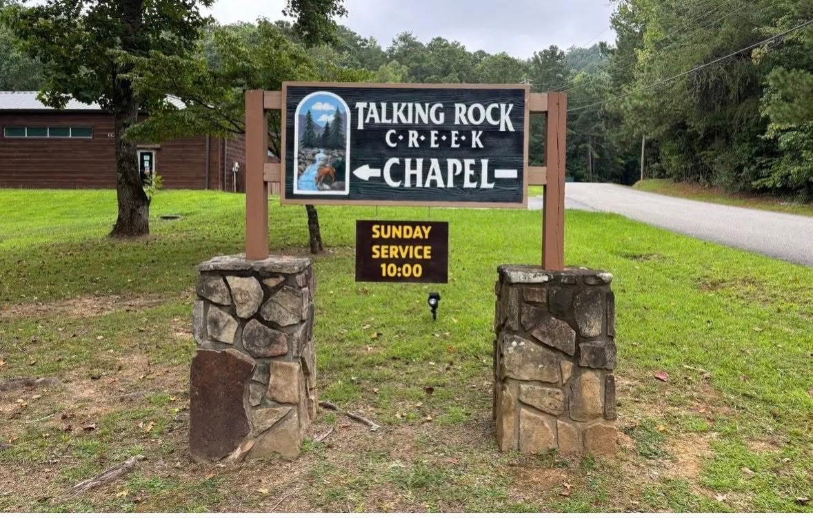
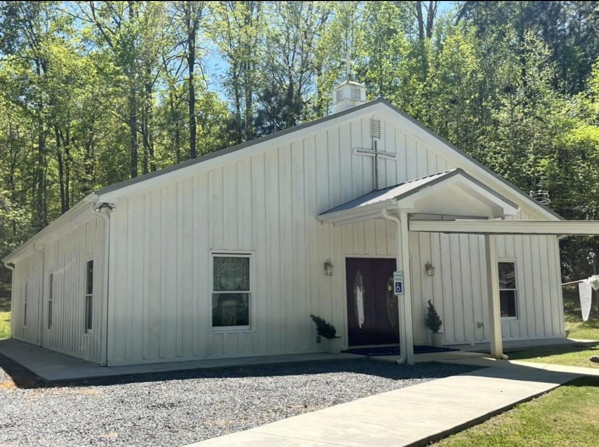

Christ Is Head
We acknowledge Jesus Christ as the Head of the Church and seek to honor Him in our worship, teaching, fellowship, and service.
A small non-denominational church centered on Jesus Christ, grounded in Scripture, and committed to faithfully reading, believing, and teaching the Bible.
Talking Rock Creek Chapel is a small non-denominational church in Murray County, Georgia.
We believe the Bible, we read the Bible, and we teach the Bible. We acknowledge Jesus Christ as the Head of the Church, and we receive His Word as the infallible guide to everlasting life.
Our desire is simple: to know Christ, faithfully proclaim His Word, worship Him together, pray for one another, and grow as a church family.

Our faith and practice are rooted in Jesus Christ and the truth of God's Word.
We acknowledge Jesus Christ as the Head of the Church and seek to honor Him in our worship, teaching, fellowship, and service.
We believe, read, and teach the Bible as the inspired and infallible Word of God and our trustworthy guide for faith and life.
We proclaim salvation and everlasting life through Jesus Christ and seek to faithfully share the good news of the Gospel.
Whether you have been in church all your life or you are looking for a place to begin, we would be glad to have you worship with us.
Dress comfortably, bring your Bible if you have one, and come ready to worship, pray, and hear God's Word.

“And he is the head of the body, the church...” Colossians 1:18